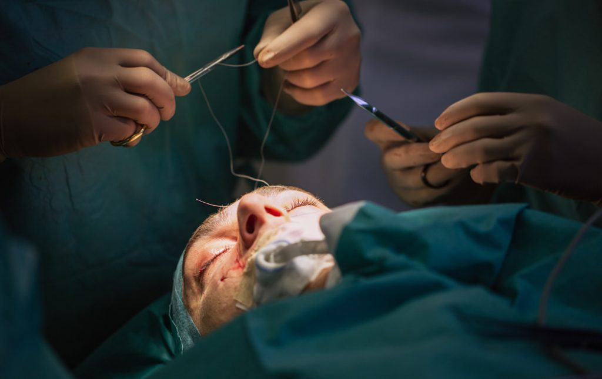

Servicios

Chequeo Medico
Se examina de forma detallada su estado de salud para prevenir cualquier mal que pueda tener con tiempo de forma segura.
Para que los chequeos
- Ayuda a conocer el estado de su cuerpo. A través de un chequeo médico, se conoce, en un buen grado, el estado de su organismo
- Detección de enfermedades a tiempo
- Su tranquilidad es primero
- Es mejor un resultado confiable
- Cambio de hábitos

Primeros Auxilios
Se le enseña que debe hacer encaso de que usted u otra persona necesite de atencio inmediatada ya que esto puede llegar a ser vital para la persona.
Primeros auxilios básicos
- Evitar nuevas lesiones o complicaciones
- Poner al accidentado lo antes posible en manos de servicios médicos
- Aliviar el dolor
- Evitar infecciones o lesiones secundarias

Cirugía plástica
Es la especialidad médica que tiene por objetivo la corrección y el mejoramiento de anormalidades de origen congénito, adquirido, tumoral o involutiva que requieran reparación o reposición de la forma corporal y su función.
Tipos de Cirugías plásticas disponibles
- Senos: aumentar o reducir el tamaño de los senos o remodelado de los senos caídos.
- Orejas: reducir el tamaño de las orejas grandes o acercar a la cabeza las orejas muy sobresalientes.
- Ojos: corregir la caída del párpado superior o eliminar las bolsas debajo de los ojos.
- Cara: eliminar las arrugas faciales, los pliegues o las cicatrices de acné.
- Nariz: cambiar la forma de la nariz

Cirugia de Hemorroides
La cirugía para las hemorroides puede involucrar: Colocar una pequeña liga de caucho alrededor de una hemorroide para encogerla al bloquear el flujo de sangre. Engrapar una hemorroide para bloquear el flujo de sangre, provocando que se encoja. Utilizar una navaja (bisturí) especial para extirpar hemorroides.
Como evitarlo
- Tener un ritmo intestinal normal con la ingesta de una dieta rica en fibra
- Evitar el excesivo consumo de carnes
- Beber abundante liquido a lo largo del día (mas de 2 litros)
- Intentar tener un ritmo defecatorio establecido y evitar retrasar la defecación si se tiene necesidad